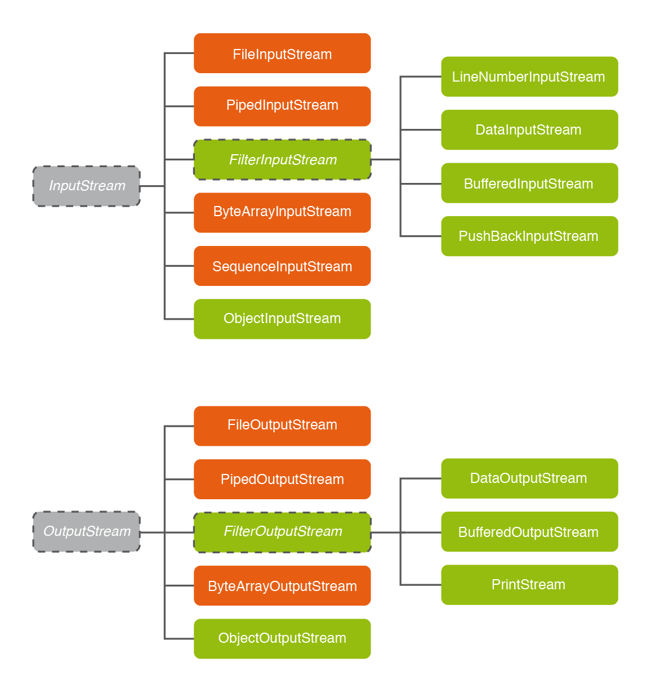

3.1 - Decoradors de InputStream i OtputStream
Com hem comentat ens serviran per a donar una funcionalitat extra. Són els que estan de verd en la següent imatge:

Fixem-nos primers en els decoradors de InputStream :
| Classe | Explicació |
|---|---|
| FilterInputStream | No és instanciable, únicament està per a que les altres depenguen d'ella (no la veurem) |
| LineNumberInputStream | Afegeix el número de línia de cada línia del InputStream (no la veurem) |
| DataInputStream | Permet llegir dades de qualsevol tipus de dades: enter, real, booleà, ... |
| BufferedInputStream | Munta un buffer d'entrada (no la veurem) |
| PushBackInputStream | Permet retrocedir un byte en la lectura, i per tant permet anar cap arrere (no la veurem) |
| ObjectInputStream | Permet llegir tot un objecte |
I de forma quasi paral·lela tenim els decoradors de OutputStream :
| Classe | Explicació |
|---|---|
| FilterOutputStream | No és instanciable, únicament està per a que les altres depenguen d'ella (no la veurem) |
| DataOut putStream | Permet guardar al flux de dades d'eixida dades de qualsevol tipus: enter, real, booleà, ... |
| BufferedOut putStream | Munta un buffer d'eixida (no la veurem) |
| PrintStream | Permet escriure dades de diferents tipus, i té també els mètodes printf i println |
| ObjectOut putStream | Permet escriure (serialitzar) tot un objecte |
Comentem-los un poquet més.
BufferedInputStream i BufferedOutputStream ens ofereixen un buffer d'entrada i d'eixida respectivament, per a fer la transferència més efectiva. En la pràctica ens oferirà poques funcionalitats útils (a banda de l'eficiència en la transferència, clar). Quan anem als decoradors de fluxos orientats a caràcters, sí que trobarem utilitats als decoradors semblants a aquestos, com per exemple llegir o escriure una línia sencera de caràcters. Però aquestos orientats a bytes, no els veurem.
DataInputStream i DataOutputStream ens oferiran la possibilitat de llegir o escriure còmodament dades de diferents tipus: enter, real, booleà, strings, ... Els veurem en detall en el proper Tema 3
ObjectInputStream i ObjectOutputStream (que curiosament són els únics que no depenen de FilterInputStream i FilterOutputStream) ens permetran guardar o recuperar de cop tot un objecte, és a dir totes les seues propietats (les dades de l'objecte). No ens haurem de preocupar ni de l'ordre ni del tipus de les propietats de l'objecte: quan escrivim l'objecte, es guardaran totes les dades de forma compacta; i quan llegim es recuperaran de forma correcta. És per tant una parella de classes d'extrema utilitat per a guardar objectes, que en definitiva són l'essència de la programació en Java. Els veurem en detall en el proper Tema 3.
PrintStream
L'únic que ens queda és el que veurem ara amb un poquet més de detall, el PrintStream. Ens permetrà bàsicament 3 coses:
- Escriure dades de més d'un tipus de dades. Per exemple print(5.25) escriu un número real, i print("Hola") escriu tot un string.
- Donar un determinat format a l'eixida, amb tota la funcionalitat a què estem acostumats amb printf
- Escriure tota una línia amb println , és a dir, acabar una dada amb el retorn de carro, per a baixar de línia.
Mirem un exemple que ens pot donar idea de la seua funcionalitat. Copieu el següent codi en un fitxer anomenat Exemple_2_41.kt :
package exemples
import java.io.PrintStream
import java.io.FileOutputStream
fun main(args: Array<String>) {
val f_out = PrintStream(FileOutputStream ("f6.txt"))
val a = 5.25.toFloat()
val b = "Hola."
f_out.print(b)
f_out.println("Què tal?")
f_out.println(a + 3)
f_out.printf("El número %d en hexadecimal és %x", 27, 27)
f_out.close();
}
Es crearà el fitxer f6.txt (si ja existia esborrarà el contingut anterior) amb el següent contingut:
Hola.Què tal?
8.25
El número 27 en hexadecimal és 1b
En realitat el PrintStream , a banda del constructor que accepta un OutputStream , també té un altre que accepta un File i fins i tot un altre que accepta un String amb el nom del fitxer. Per tant, la següent sentència també ens funcionaria:
val f_out = PrintStream("f6.txt")
Llicenciat sota la Llicència Creative Commons Reconeixement NoComercial CompartirIgual 2.5